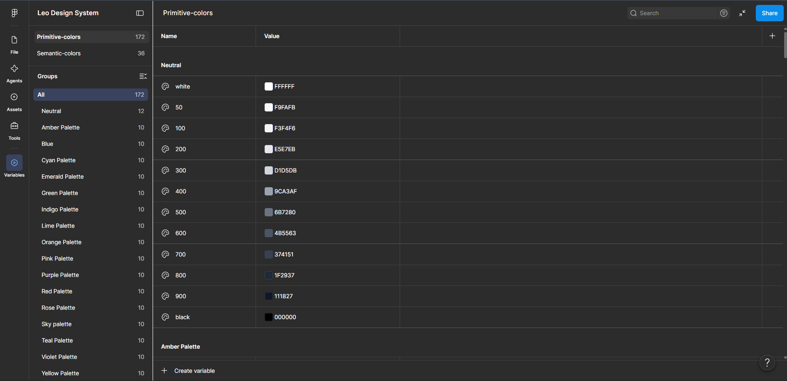
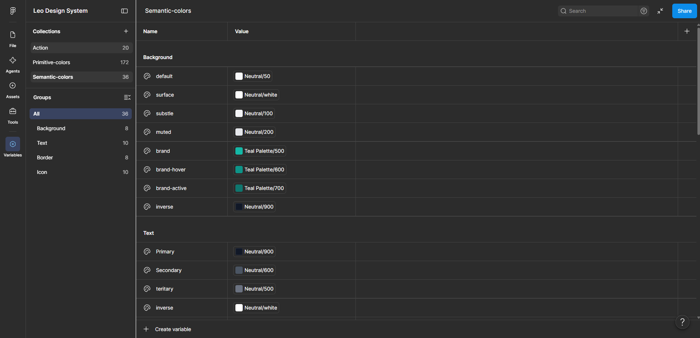
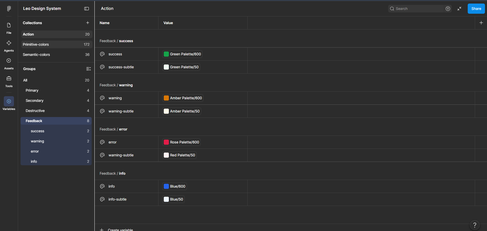

Leo Design System — Color Foundation
A structured color and semantic token system for scalable product interfaces.

Overview
The color foundation of Leo Design System is built using a layered token architecture. Primitive colors provide the visual foundation, while semantic and action tokens define how those colors are used across the interface.
I started by separating color values from their functional meaning. The primitive layer holds the raw palette, the semantic layer defines how those colors are used across the interface, and the action and feedback layers standardize interaction states and system communication.
01. Color Architecture
The system is organised into four token layers, each with a single responsibility. Primitive tokens hold raw values; every layer above them adds meaning.
COLOR SYSTEM
│
┌───────────┴───────────┐
↓ ↓
Primitive Colors Semantic Colors
172 tokens 36 tokens
│ │
│ ┌────────┼────────┐
│ ↓ ↓ ↓
│ Background Text Border
│ │
│ Icon
│
└──────────────┬───────────────┐
↓ ↓
Action Feedback
20 tokens 8 tokens
| Layer | Purpose | Current |
|---|---|---|
| Primitive Colors | Raw color values | 172 |
| Semantic Colors | UI meaning | 36 |
| Action | Interactive states & actions | 20 |
| Feedback | System feedback states | 8 |
02. Primitive Color System
Building the visual foundation. I created a structured primitive color library consisting of 17 color families, each using a consistent 50–900 scale.

Example: the Teal family, stepped from 50 to 900 with a predictable, evenly spaced progression.
Every palette follows the same structure — 50, 100, 200, 300, 400, 500, 600, 700, 800, 900 — so designers can predictably reach for a lighter or darker step without opening a color picker. The Neutral palette additionally contains dedicated white and black values.
03. Why Primitive Tokens?
Primitive tokens represent the actual color values, rather than their purpose in the interface.
Teal Palette/500
↓
#14B8A6
The primitive layer gives the system a controlled source of truth for color values. This means the same color can be referenced by multiple semantic roles without duplicating the actual value.
04. Semantic Color System
From color values to design meaning. The semantic layer currently contains 36 tokens organized around four UI roles: Background, Text, Border, and Icon. This creates a distinction between what the color is and what the color does.

Teal Palette/500
↓
Background/brand
Instead of components directly depending on a hex value, they can depend on the semantic role.
05. Background Tokens
The Background group contains 8 tokens establishing different surface levels and brand interaction states.
| Semantic Token | Maps To | |
|---|---|---|
| Background/default | Neutral/50 | |
| Background/surface | Neutral/white | |
| Background/brand | Teal Palette/500 | |
| Background/brand-hover | Teal Palette/600 | |
| Background/brand-active | Teal Palette/700 |
This is a good example of the value → meaning relationship in the system: the primitive supplies the value, the semantic token supplies the intent.
06. Text Tokens
The Text group contains 10 tokens establishing different levels of text hierarchy.
| Semantic Token | Maps To | |
|---|---|---|
| Text/Primary | Neutral/900 | |
| Text/Secondary | Neutral/600 | |
| Text/Tertiary | Neutral/500 | |
| Text/Inverse | Neutral/white |
These tokens allow typography to reference semantic roles instead of individual color values.
07. Border Tokens
The system contains 8 Border tokens. The purpose of this layer is to control borders through semantic roles rather than arbitrary color selections, giving components a consistent way to express:
08. Icon Tokens
The Icon group contains 10 tokens. The system establishes icon hierarchy and state through semantic roles:
This prevents designers from manually selecting different colors for individual icons.
09. Action Tokens
The Action collection contains 20 tokens, organized into Primary, Secondary, and Destructive action types. Each type uses four interaction states, creating a consistent interaction model for every future component.

Primary Primary Primary-hover Primary-active Primary-disabled Secondary Secondary Secondary-hover Secondary-active Secondary-disabled Destructive Destructive Destructive-hover Destructive-active Destructive-disabled
Because the states are tokenized, a new button, toggle, or menu item inherits the correct hover, active, and disabled colors automatically — no per-component color decisions required.
10. Feedback Tokens
The Feedback group contains 8 tokens across four system states — Success, Warning, Error, and Info — each with a default and a subtle variant.
| State | Default | Subtle |
|---|---|---|
| Success | Green Palette/600 | Green Palette/50 |
| Warning | Amber Palette/600 | Amber Palette/50 |
| Error | Red Palette/600 | Red Palette/50 |
| Info | Blue Palette/600 | Blue Palette/50 |
These tokens can later be consumed by components such as:
11. Token Relationship
This is the most important visual explanation of the system: a color value is never consumed directly by a component — it always travels through a semantic role first.
PRIMITIVE
│
↓
Teal Palette/500
│
↓
SEMANTIC
│
↓
Background/brand
│
↓
COMPONENT
│
↓
Button / CTA
The same principle applies throughout the system:
Green Palette/600 Amber Palette/600 Blue Palette/600
↓ ↓ ↓
Feedback/Success Feedback/Warning Feedback/Info
↓ ↓ ↓
Success Alert Warning Alert Information Alert
This demonstrates that the system isn't simply a collection of colors — it has a token hierarchy.
12. Outcome
The color foundation is complete and documented as a scalable layer. Designers and engineers now reference intent-based tokens instead of raw hex values, which removes repeated color decisions and makes theming and future dark/light variations a single-layer change.
Color Families
Primitive Tokens
Semantic Tokens
Action Tokens
Feedback Tokens
Status: Color foundation established. Next phase: typography, spacing, elevation, components, and patterns.